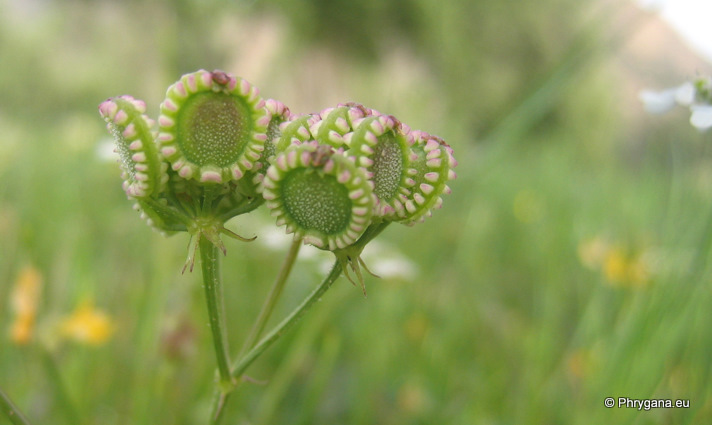

Tordylium apulum Agia Galini 09 avril 2008
| PHRYGANA | Fauna | Flora |
additions nouveautés |
espèces species |
contact -
info - commentaires phrygana1 (at) gmail.com |
| diversité crétoise -- Cretan diversity | |||||
| Tordylium apulum L. |
| 175 | Flora | APIACEAE | Tordylium |
Tordylium apulum Agia Galini 09 avril 2008 |
| en: Mediterranean hartwort | |
| Feuilles: feuilles inférieures pennées avec 5 - 7 des segments ovales et dentés; feuilles supérieures découpées en segments linéaires non dentés | |
| Tige: poilue, ramifiée | |
| Fleurs: ombelle assez lâche (4 - 8 rayons grêles et pubescents), large de 30 à 50 mm; bractées courtes, linéaires déflexes; fleurs blanches, inégales, les extérieures avec un pétale nettement plus grand (5-9 mm),profondément lobé en 2 lobes égaux; les autres pétales blancs, petits (4 - 5 mm) | |
| Fruit: ovale avec une marge gonflée et lobée, 7 - 10 mm | |
| Hauteur: 10 - 30 cm | Type biologique:thérophyte ramifié |
| Floraison: mars avril mai | |
| Altitudes: 0 - 850 m | |
| Statut en Crète: indigène -- native | |
| Biotopes en Crète: olivaies, bords de chemins, phrygana, champs cultivés,lits des gorges | |
| Distribution: région Méditerranéenne | |
| Espèce héliophile | |
|
 Tordylium apulum Agia Galini 09 avril 2008 |
| 01 septembre 2010 |
| © paul fontaine -- © Phrygana.eu 2007 -- 2013 |